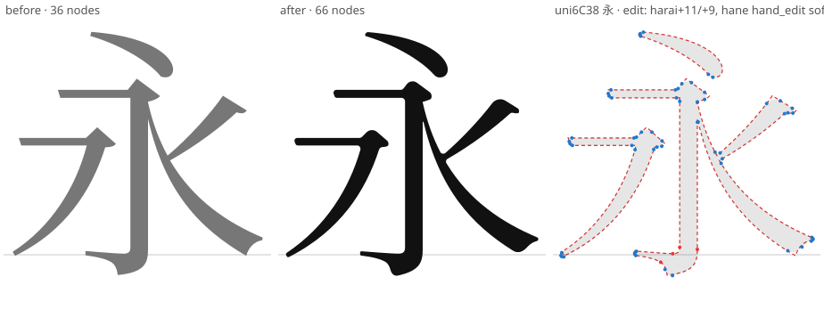
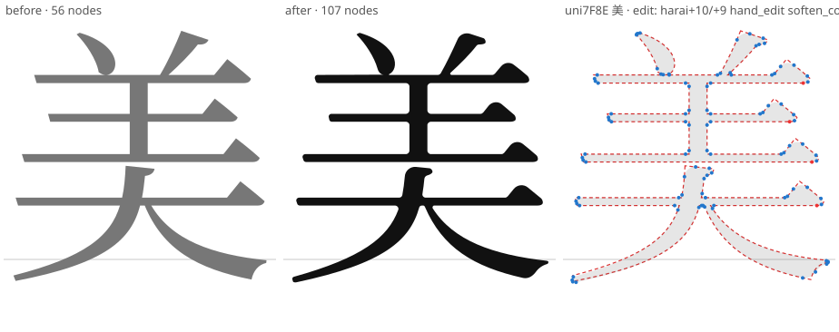
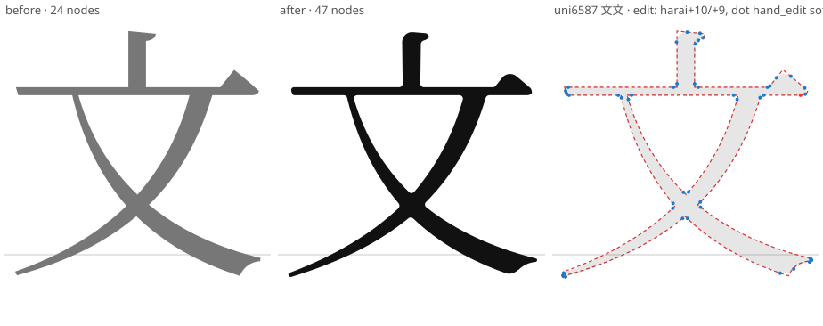
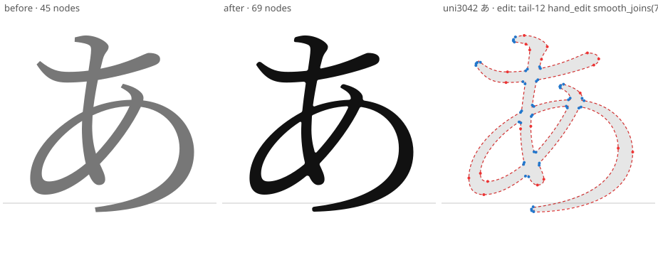
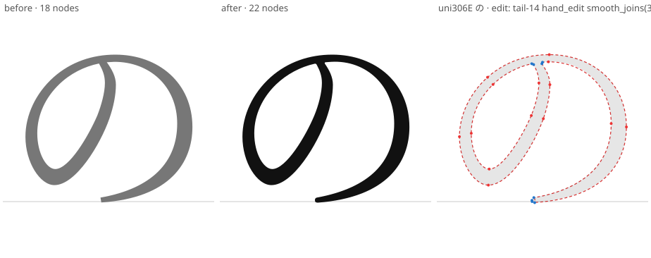
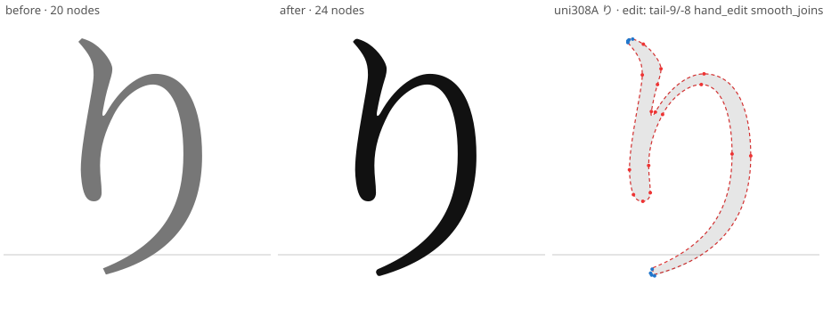
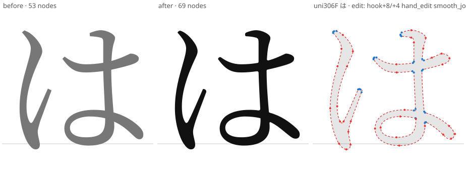
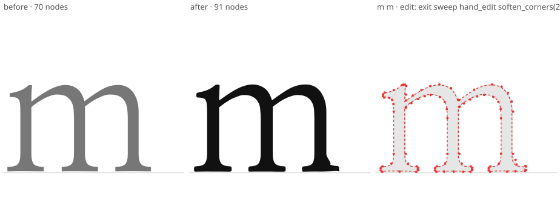
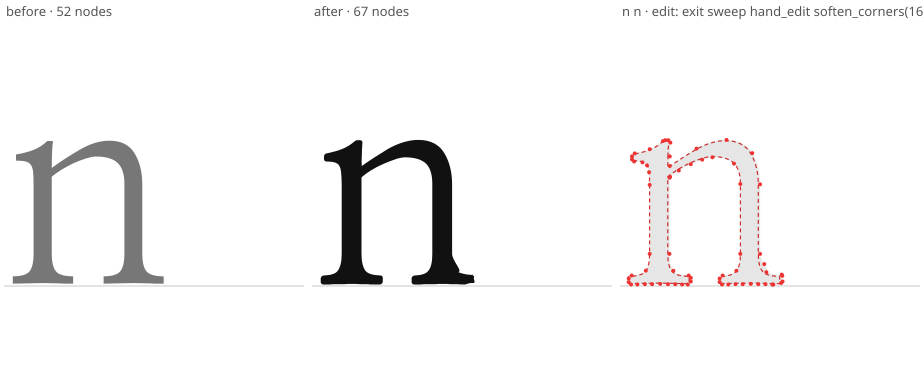
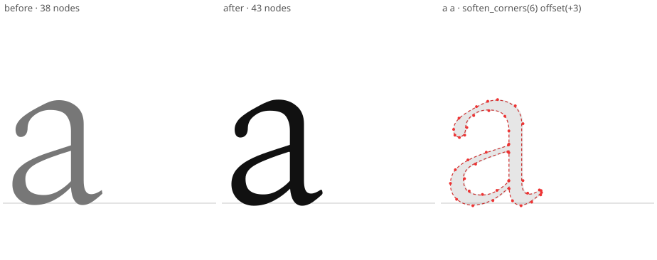

文字から、美しさを。
日常の文章を、もっと美しく、やさしく。静かで、上品で、読むほどに心地よい新しい明朝体です。
A refined serif typeface for a more beautiful world. Designed for Japanese, with harmony in English.
下の枠に自由に入力してください。すべて実際の Lovely Serif（woff2）で表示されます。
本文・見出し・英文、それぞれの表情。
やさしく、上品に、美しく。
静かで、強くて、やさしい。日常の文章から、特別な場面まで、すべての文字に美しさを。
季節の移ろいの中で、言葉はそっと息をする。光と影が織りなす情景に、心は静かにほどけていく。美しい文字は、美しい時間をつくる。
「永」「美」「文」などの線の終端を美しく、ウロコ（三角形のとめ）には丸みを。「あ」「の」「り」「は」は、筆の抜けのような柔らかな曲線に。
Beauty in every letter.
A quiet, timeless serif. Designed for clarity, harmony, and a more beautiful everyday. The Latin keeps the elegant proportions of Nanum Myeongjo, with slightly rounded serifs and a delicate upward sweep at the exit of m, n, i, l and k.
Mixed text — 日本語と English を混ぜても、高さと線の強弱が揃うように調整しています。2026年11月、Lovely Serif v0.1.0。
ABCDEFGHIJKLMNOPQRSTUVWXYZ abcdefghijklmnopqrstuvwxyz 0123456789 & ? ! , . ; : ‘ ’ “ ” ( ) [ ] @ # % $ € ¥
12px 日常の文章を、もっと美しく、やさしく。A refined serif typeface for a more beautiful world.
14px 日常の文章を、もっと美しく、やさしく。A refined serif typeface for a more beautiful world.
16px 日常の文章を、もっと美しく、やさしく。A refined serif typeface for a more beautiful world.
20px 日常の文章を、もっと美しく、やさしく。A refined serif typeface for a more beautiful world.
28px 日常の文章を、もっと美しく、やさしく。A refined serif typeface.
40px 文字から、美しさを。Lovely Serif
64px 永美文あのりは
vert / vrt2 / vpal フィーチャー対応。句読点・括弧・長音は縦組み用の字形に置き換わります。
ことばが、日常をやさしくする。
「美しい文字は、美しい時間をつくる。」——季節の移ろいの中で、言葉はそっと息をする…。
二〇二六年十一月 Lovely Serif（ラブリーセリフ）
縦書き（vpal・詰め組み）
『文字から、美しさを。』光と影が織りなす情景に、心は静かにほどけていく。
日常に、美しい文字を。
10,364 グリフ · 10,117 文字 · JIS X 0208 漢字 6,356/6,356 · JIS X 0213 第1面漢字（常用・人名用をすべて含む）7,615/7,615
上の漢字は JIS 第1水準からの抜粋（9字おき）。全収録文字は reports/coverage.md を参照。
v0.1 は Regular のみ。Light / Medium / SemiBold / Bold は設計中（単純な太さ変更では完成扱いにしません）。
左＝元フォント（Noto Serif JP / Nanum Myeongjo）、中＝Lovely Serif、右＝重ね合わせ（赤点線＝元、青点＝新しく追加した丸めの節点）。










サイト全体のフォントを Lovely Serif に置き換えるには、woff2 を配置してこれを追加するだけです。
@font-face {
font-family: "Lovely Serif";
src: url("/fonts/LovelySerif-Regular.woff2") format("woff2");
font-weight: 400;
font-style: normal;
font-display: swap;
}
html, body { font-family: "Lovely Serif", "Noto Serif JP", "Hiragino Mincho ProN", "Yu Mincho", serif; }
/* 縦書き */ .tate { writing-mode: vertical-rl; }
/* 詰め組み */ .palt { font-feature-settings: "palt" 1; }
macOS では LovelySerif-Regular.otf（または .ttf）をダブルクリック → Font Book で「インストール」。ファミリー名は「Lovely Serif」（日本語環境では「ラブリーセリフ」）として表示されます。